Photographs for your desktop.
Original photography by Yuval Kolodkin-Gal, edited for the screen. Four matching Hyprland themes.
{kind=link}
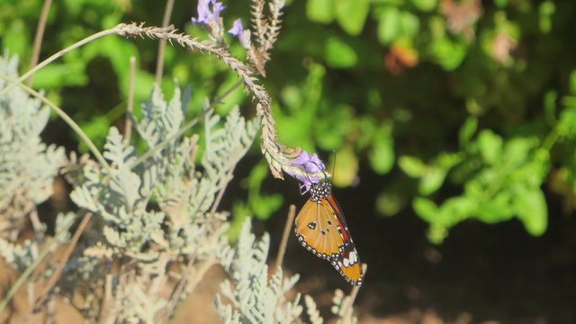
{kind=link}
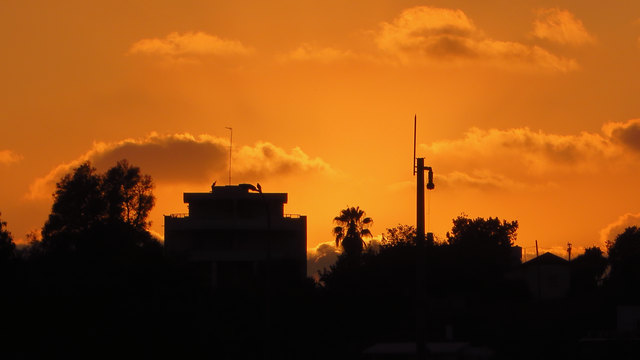
Color beyond the photograph.
Four palettes carry the photographs into Hyprland. Theme setup and installation.
The collection
Butterfly in Gold
An orange butterfly among pale leaves and deep green shade.
{kind=link}
{kind=link}
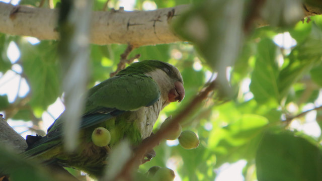
Fig Thief
A parakeet tucked into the green light of a fig tree.
{kind=link}
{kind=link}
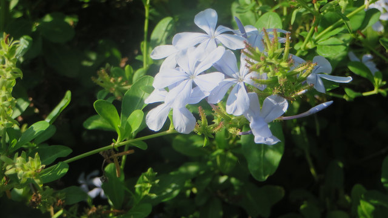
Porcelain Petals
Pale blue flowers against shaded leaves.
{kind=link}
{kind=link}
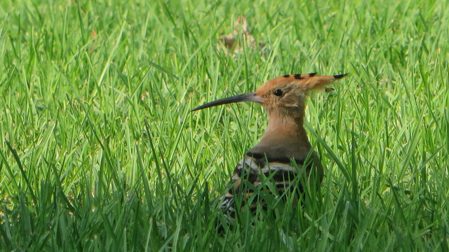
Hoopoe in the Grass
A low view of a hoopoe framed by fine blades of grass.
{kind=link}
{kind=link}
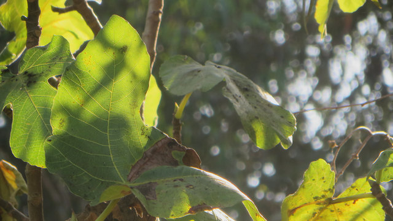
Canopy Light
Sunlight tracing the veins of broad leaves.
{kind=link}
{kind=link}
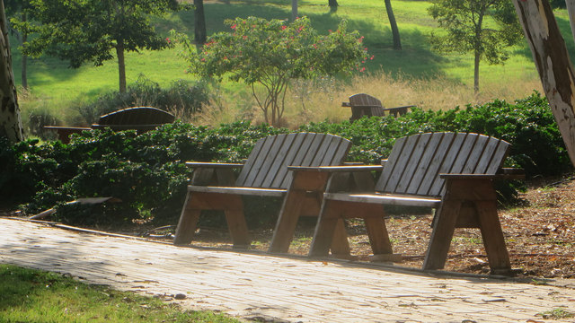
A Place to Pause
Two wooden chairs on a quiet garden path.
{kind=link}
{kind=link}
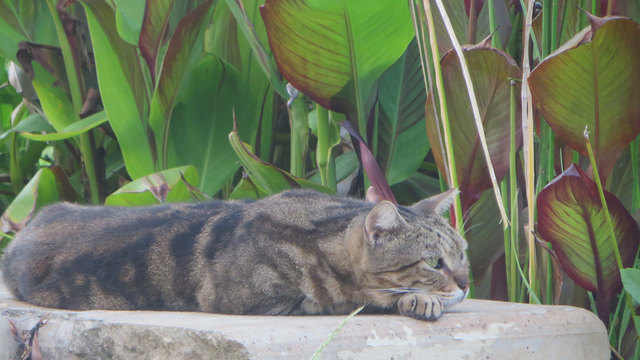
Garden Nap
A resting tabby surrounded by tall leaves.
{kind=link}
{kind=link}
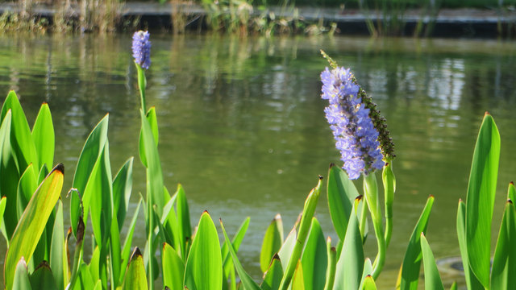
Violet Water
Violet flower spikes above green water and bright leaves.
{kind=link}
{kind=link}
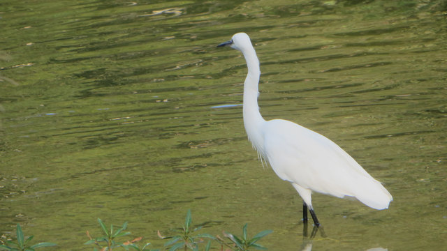
Quiet Water
A white egret standing in rippled olive water.
{kind=link}
{kind=link}
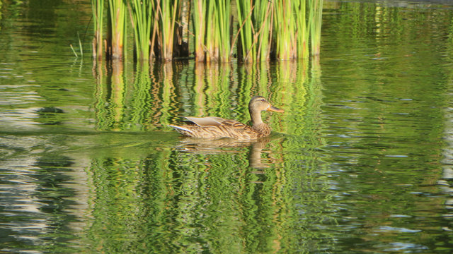
Reed Reflections
A duck gliding through long reflections of reeds.
{kind=link}
{kind=link}
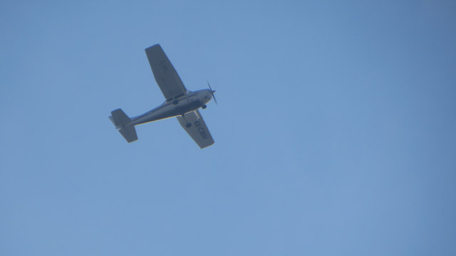
Open Sky
A small plane crossing a broad field of muted blue.
{kind=link}
{kind=link}
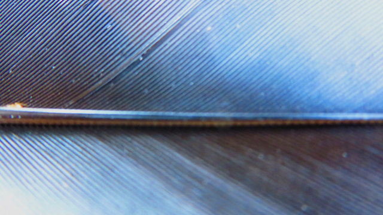
Featherlines
An abstract close view of blue feather barbs and their central shaft.
{kind=link}
Last Amber
A roofline and trees silhouetted against an amber evening sky.
{kind=link}
{kind=link}
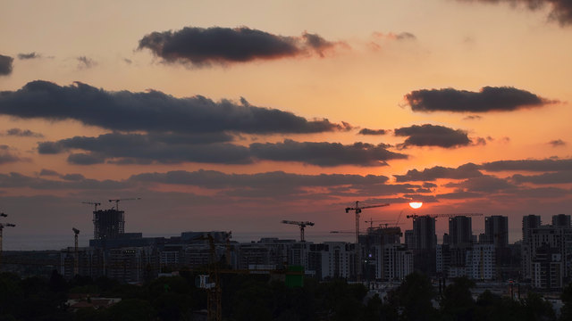
City Afterglow
Cloud layers and a warm sun above the city skyline.
{kind=link}
{kind=link}
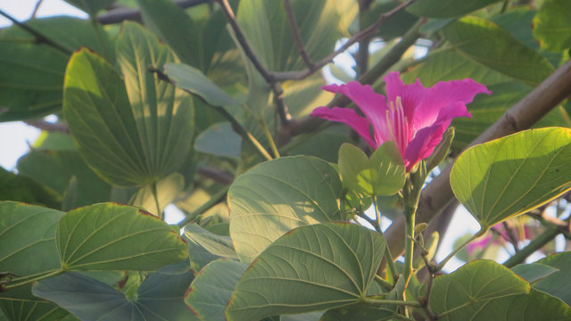
Magenta in the Leaves
A magenta flower peeking through a canopy of leaves.
{kind=link}
{kind=link}
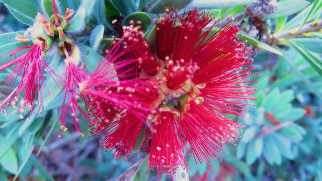
Bottlebrush
Crimson stamens among cool leaves, with a restrained color balance.
{kind=link}
{kind=link}
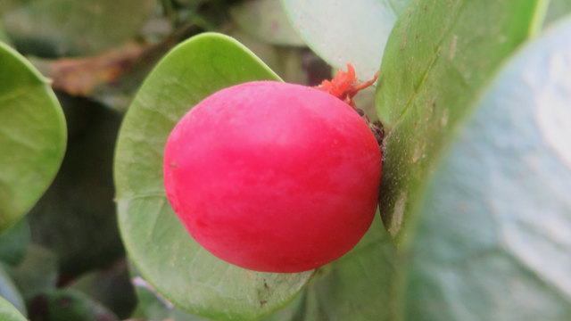
Pink Berry
A single bright pink fruit nested between soft green leaves.
{kind=link}
{kind=link}
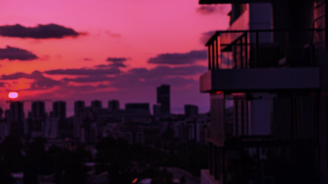
Rose City
A soft-focus city sunset retaining the photographer’s existing rose and violet grade.
{kind=link}
No photographs in this theme yet.